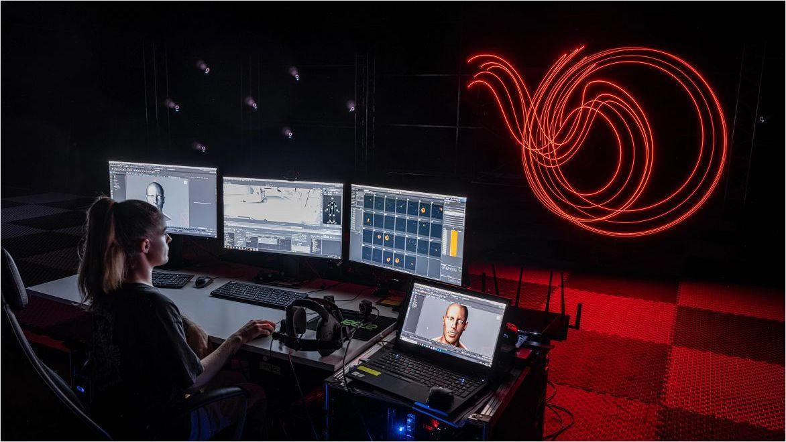

工具、软件、管线和AI不断接手重复性、机械性和高成本劳动。

第一层观察动画怎样被制作和呈现。第二层比较技术接手了什么，以及人的工作重心怎样变化。
第一层 · 技术阶段与动画表现
动画怎样被制作，又怎样呈现在银幕与屏幕上
这一层只观察技术媒介、生产载体、视觉风格和影像效果。点击节点后，当前阶段会在时间轴内展开。
两层叙事的连接点
技术接手了什么？人转向了什么？
五个阶段使用同一组问题进行横向比较。图中只表示劳动内容的变化，不表示精确人数或替代比例。
第二层 · 劳动迁移与人机分工
回到五个阶段，重新理解动画生产中的分工
这一次沿用同一条时间轴，集中观察技术接手的劳动、人仍负责的工作、人的新工作重心和生产组织变化。
劳动迁移的最新阶段
AI进入八个动画制作环节
前四个阶段中，技术主要逐步接手工具性、机械性和流程性劳动。进入AI阶段后，技术开始同时进入剧本、分镜、角色、场景、动作、声音、后期和宣发等综合环节。人的角色进一步转向筛选、修正、风格控制和最终判断。
100%
AI流程覆盖率
该指标表示AI对动画制作流程的可介入范围。它不等于AI替代率、自动化比例或市场占比。
3.25 / 5
AI平均影响程度
多数环节仍处于辅助、协同和人工修正阶段。
现实旁证
岗位语言中的现实回声
招聘信息中的软件、管线、AI和相关技能要求，只能作为现实变化的旁证。它可以帮助说明技术变迁正在影响岗位能力结构，但不能直接等同于整个动画产业全貌。
回到研究问题
技术变迁如何重新分配动画劳动
人的工作逐渐从具体执行转向判断、协调、审美、控制和最终决策。
AI扩大了技术的可介入范围，但没有取消人的叙事、审美和责任判断。